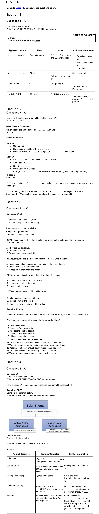

IELTS Listening: Test 14
Audio
The recording is split into the four sections. In the exam you hear each one once, so try a first listen without pausing.
Question book
Section 1
Section 2
Questions 11–20
Complete the notes below. Write NO MORE THAN TWO WORDS for each answer.
Seven Sisters’ Campsite
Seven sisters are named after 11 in East
Sussex
Weekly Schedule:
Monday
Go on a trail
Have a picnic next to a 12
Have a swim PS. Activities are subject to 13 conditions
Tuesday
Continue up the hill Tuesday Continue up the hill
Arrive at a 14
Go 15
Have a pebble massage
A range of 16 are available there, including jet-skiing and parasailing.
Pieces of
Equipment:
There are also boats, 17 and kayaks and you can set out to sea as long as you are wearing 18
You can also go rock-climbing and you can go 19 when you come back down to earth. You can talk to your friends while you are near an open 20
Section 3
Questions 21–25
Choose the correct letter, A, B orC.
21 Students may fail the exam if they
- A do not collect primary statistics.
- B copy other people’s work.
- C do not follow the instructions.
22 Why does the man think they should avoid including the pictures of the first volcano in the presentation?
- A They are not attractive.
- B The time is limited.
- C People have never heard of it.
23 About Mount Fago, a volcano in Mexico or the USA, the man thinks
- A they should not use inaccurate information in the presentation.
- B they should use another example.
- C it does not matter where the volcano is.
24 The woman thinks they should mention Mount Etna since
- A it covers most of the important points.
B. It was formed a long time ago
- C it has stunning views.
25 They agree to leave out Mount Herton as
- A other students have used it before.
- B it is irrelevant to their topic.
- C there is nothing special about this volcano.
Questions 26–30
Choose FIVE answers from the box and write the correct letter, A-G, next to questions 26-30.
Which statement applies to each of the following situations?
- A make a short film
- B lacked his/her own points
- C neglect the positive aspect
- D watch some documentaries
- E did not prepare beforehand
- F identify the differences between them.
26 The woman’s last presentation was criticized because of it
27 The tutor suggests for the next presentation the woman should
28 People do not know enough about volcanoes and so they
29 The reason why the man felt very nervous is that he
30 They are researching active and extinct volcanoes to
Section 4
Question 31
Complete the sentence below.
Write NO MORE THAN TWO WORDS for your answer.
Petroleum is a 31 resource as it cannot be replenished.
Show the original book pages (picture)

Tap or click the pages to open them full size in a new tab.
Answer sheet
Marking ignores capital letters and accepts plurals and the usual alternative answers. If your answer is right but not accepted, press My answer is also right under it.
Tapescript
Check your answers first, then the tapescript opens here.